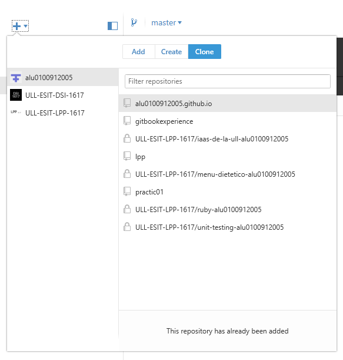

Chapter 2: GH - Pages
GitHub Pages es un servicio de alojamiento de sitios estáticos y está diseñado para alojar páginas directamente desde un repositorio de GitHub
Cómo se utiliza GH-Pages
Debemos crear el repositorio en GH y el nombre debe contener la extensión final _github.io _por ejemplo:
alu0100912005.github.io
Tenemos 2 formas de clonar nuestro repositorio para poder trabajar con Pages, mediante linea de comandos o de manera gráfica
Línea de comandos
$ git clone https://github.com/alu0100912005/alu0100912005.github.io
Creamos nuestro index.html , hacemos un commit y luego un push
Abrimos nuestro navegador por defecto y accedemos a:
https://alu0100912005.github.io/
Y ya tenemos nuestro GH-Pages creado y funcionando.
Ventana gráfica
Nos descargamos la versión de escritorio de GitHub compatible con nuestra máquina y una vez instalada la versión compatible entramos en nuestra cuenta GH, añadimos nuestro repositorio y creamos en la carpeta local que hayamos seleccionamos el archivo index.html inicial.

Una vez hacemos el commit, le damos al botón syncpara que se sincronize los cambios con nuestro repositorio en la nube.
Módulo GH - pages para autimatización de gh-pages
Para empezar debemos instalar el módulo:
npm install gh-pages --save-dev
Uso básico
var ghpages = require('gh-pages');
var path = require('path');
ghpages.publish(path.join(__dirname, 'dist'), function(err) { ... });
Publicar
ghpages.publish(basePath, callback);
// or...
ghpages.publish(basePath, options, callback);
Al llamar a esta función se creará un clonetemporal del repositorio actual, también se creará una rama gh-pages si aún no existe, se copiará sobre todos los archivos de la ruta base o solo aquellos que coincidan con los patrones de la configuración src opcional, hacemos un commitde todos los cambios y posteriormente un pusha la rama originremota
basePath
- Tipo:
string
El directorio base de todos los archivos de origen (aquellos que aparecen en la propiedad srcconfig).
Ejemplo del uso de basePath:
/**
* Given the following directory structure:
*
* build/
* index.html
* js/
* site.js
*
* The usage below will create a `gh-pages` branch that looks like this:
*
* index.html
* js/
* site.js
*
*/
ghpages.publish(path.join(__dirname, 'build'), callback);
El módulo cuenta con opciones adicionales de configuración.